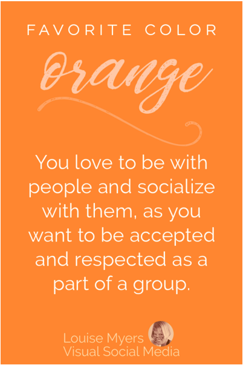

Orange

You love to be with people and socialize with them, as you want to be accepted and respected as a part of a group.
Favoring orange shows that you are good-natured, enjoy being with other people, and are swayed by outside opinions. You do good work,, have strong loyalties, feel good will toward others, and have a solicitous heart.
The party is wherever you are.
Forever the optimist, you fully expect something wonderful is about to happen.
You have perfected being present, living in the moment, and focusing on what and who is in front of you.
You may be described as a social animal, social butterfly, and/or mediator.
A problem solver at heart, you channel your high energy to inspire and influence others.
Team building is a natural skill because others are drawn to your zest for life and even-keeled positivity.
Flying by the seat of your pants usually works out well for you.
No matter what life throws your way, you do not fold under pressure or cave to panic.
You take things in stride because surely something wonderful is about to happen!
YELLOW
BLUE
GREEN
RED
PURPLE
BROWN
BLACK
WHITE
PINK
Intro